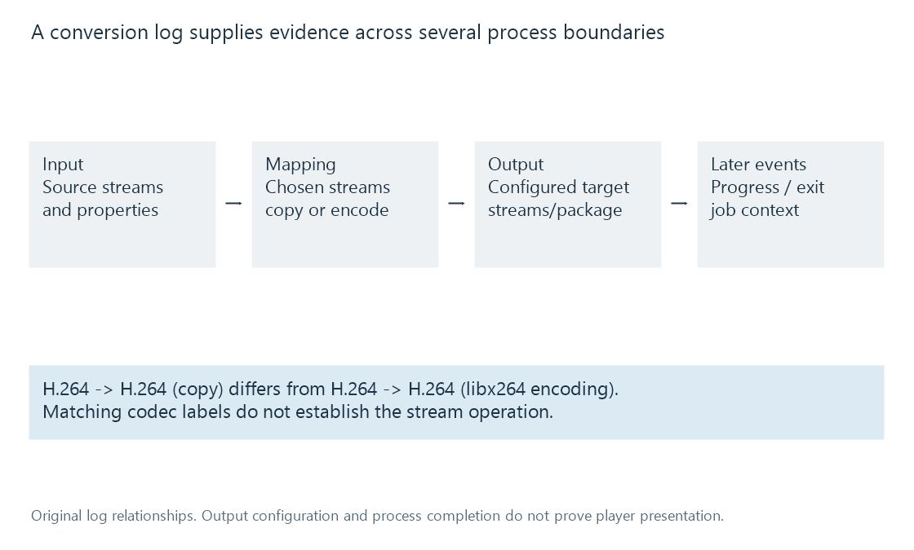

Reading a transcoding log
A transcoding log records process configuration and progress whose inputs, stream mappings, output stages and final events need to be interpreted in their own scopes.
A conversion log describes a process and its observations. The most useful reading connects input, selected streams, handling, output and event order rather than treating every codec name or warning as the conclusion.
The excerpts below are original illustrations. They were not captured from an Emby session or an executed FFmpeg job.
Begin with the input and intended selection
This example selects the first video and audio streams and requests video copying with AAC audio output:
ffmpeg -i source.mkv -map 0:v:0 -map 0:a:0 -c:v copy -c:a aac -ac 2 -b:a 192k output.mp4
Input and output options have a scope. The source name identifies a resource locator; the map identifies which of its streams is selected; codec options identify requested handling for the relevant output streams.
A described input could contain:
Input #0, matroska,webm, from 'source.mkv':
Stream #0:0: Video: h264, yuv420p, 1920x1080, 24 fps
Stream #0:1: Audio: ac3, 48000 Hz, 5.1, 384 kb/s
That is source information. It does not establish the output audio codec or channel count.
If the source contains other tracks, their presence is different from their selection. A source-qualified map avoids inferring “first English audio” from a generic integer in another representation.
The mapping supplies operation evidence
For the original video-copy/audio-conversion case:
Stream mapping:
Stream #0:0 -> #0:0 (copy)
Stream #0:1 -> #0:1 (ac3 (native) -> aac (native))
The video mapping says copy. The audio mapping names decoding/encoding implementations. Both streams participate in the same output process while taking different operations.
An output description can then be:
Output #0, mp4, to 'output.mp4':
Stream #0:0: Video: h264, yuv420p, 1920x1080, 24 fps
Stream #0:1: Audio: aac, 48000 Hz, stereo, 192 kb/s
The selected audio has changed from six-channel AC-3 to stereo AAC. The video mapping supplies the evidence that its H.264 representation is preserved; the matching H.264 label alone does not.

Same codec names can conceal another video encode
A separate original mapping example is:
Stream #0:0 -> #0:0 (h264 (native) -> h264 (libx264))
The input and output codec family are both H.264, but this mapping describes decoding and another encode. It is different from the copy mapping.
A filename containing “transcode” also does not decide the operation. The server can use conversion infrastructure for remuxing or audio preparation. Requested options and actual mapping are more precise evidence.
Encoder and decoder names describe stages. A named hardware encoder, where present, does not establish how every upstream filter ran or whether all picture data stayed in one memory domain.
Filters connect another kind of data
An original graph fragment could contain:
[0:v:0]scale=1280:720[vout]
The filter uses decoded pictures and labels its output vout. An output map consuming that label is another relationship from directly mapping an input stream-copy path.
Dimensions in an output description can help confirm the requested result, but a configured output header is still not proof that valid media was generated through the entire programme.
A format or graph-initialisation error can occur before useful output. A later error can interrupt an otherwise successful start. The event timing matters.
Interpret progress with its clock and units
In a separate original 24-fps video-encoding example:
frame=1440 fps=48 time=00:01:00.00 speed=2.00x
If that output progress was accumulated over 30 wall seconds, 1,440 output frames represent sixty media seconds, giving a 2x rate.
The media progress time is not the wall-clock duration. After a seek or another timestamp-origin choice, an absolute-looking time also needs its initial context before differences are computed.
Frame counters do not universally prove how many source pictures were decoded. Stream copying, cadence conversion and multiple outputs can give counters different scopes. Transcoding speed supplies the unit reasoning.
A quiet progress interval can be throttling or a wait. It can also reflect a blocked or failed stage. The surrounding events and positions distinguish them.
The final event changes the interpretation
A process can be stopped because playback ended, the viewer sought elsewhere or another job replaced it. A terminated process does not automatically imply an accidental failure.
Conversely, earlier output configuration and a few successful progress lines do not prove complete success. Final process status, the generated output and the player's observed result supply additional evidence.
Even a completely successful output process does not prove that the player retrieved or presented its media. Playback information and request/player observations connect that later part of the path.
Correlate the relevant job
A library can have several sessions and several log files. The source identity, selected tracks, process/session context and timestamp interval connect the log to the observed problem.
Wall-clock time zones or skew can also affect cross-device correlation. A line labelled 10:00 on one device is not automatically simultaneous with another device's 10:00 without clock context.
Emby's Log Files documentation describes the product's log artifacts and access workflow. The technology reading here asks what each artifact establishes.
See Also
- Stream copying and encoded packet handling
- Media filter graphs
- Transcoding speed, fps and media time
- Reading Emby playback information
- Playback error categories and evidence scopes